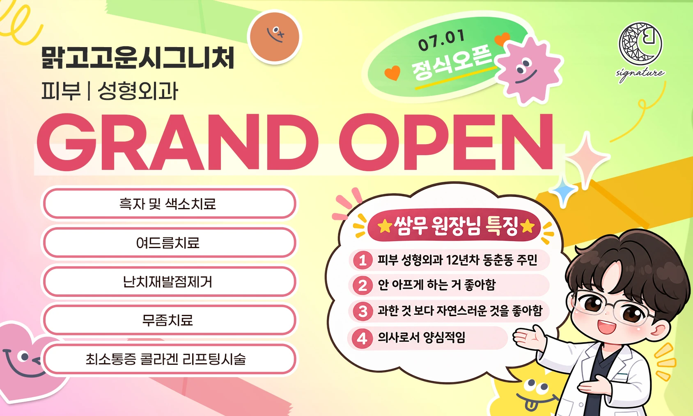
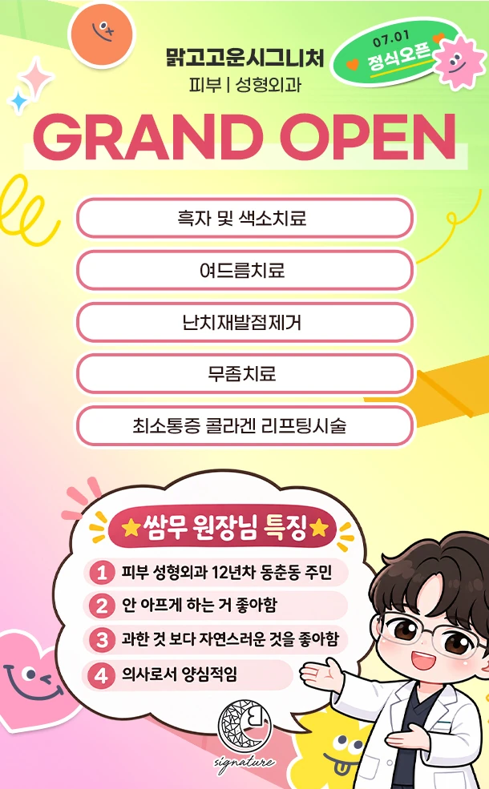

2026.10
맑고고운시그니처 흑자치료
흑자로 고민하는 30~50대를 위한, 성형외과 맑고고운시그니처의 흑자치료(리팟 레이저) 소개 페이지
Background
맑고고운시그니처의원은 인천의 성형외과로, 시그니처 시술인 흑자 치료(리팟 레이저)를 알리는 서브페이지가 필요했습니다. 이 페이지를 찾는 사람은 흑자로 고민하는 30~50대와 여러 시술을 비교해 보는 사람들입니다.
마케팅팀 기획안을 바탕으로 디자인과 퍼블리싱을 맡았고, 페이지에 들어가는 이미지는 모두 직접 기획했습니다. 흑자의 정의 → 진단 포인트 → 장비와 기술 → 진료 과정 → 자주 묻는 질문 순서로 정보가 이어집니다.
Key Decisions
정보를 짚어 주는 캐릭터
병원장님이 캐릭터를 활용한 귀여운 디자인을 선호해 원장님 캐릭터를 중심에 두었습니다. 귀여움에서 그치지 않도록 캐릭터는 시술 정보를 짚어 주는 역할로 배치해, 정보를 이해하는 데 방해가 되지 않게 했습니다.
일러스트로 통일한 이미지
원장님 캐릭터를 살리기 위해 일러스트를 쓸 수 있는 곳에는 모두 일러스트를 사용해, 페이지 전체의 이미지 톤을 하나로 맞췄습니다.
같은 계열, 다른 인상
같은 계열의 CnB맑고고운본점이 웜 오렌지와 사진 중심이라면, 시그니처는 로즈 핑크 포인트와 캐릭터 일러스트로 이 병원만의 인상을 새로 만들었습니다.
Design System
로즈 핑크 하나를 포인트로 쓰고, 검정과 회색 단계로 긴 시술 정보의 위계를 나눴습니다.
Color
- Rose#D66788
- Rose Light#F0B5C5
- Pink Soft#FFD3DF
- Ink#131313
- Dark#2B2B2B
- Gray#6A6A6A
- Line#D0D0D0
- Surface#F9F9F9
Typography
리팟레이저로 한번에 치료합니다.
Pretendard Bold 24 — 섹션 제목얼굴에 생긴 갈색 반점
Pretendard Bold 18 — 항목 제목비슷해 보이는 갈색 색소도 종류와 특성이 다릅니다.
Pretendard Regular 16 — 본문
Screens
페이지의 앞부분입니다. 진단 포인트, 장비, 진료 과정, FAQ까지 이어지는 전체 흐름은 실제 페이지에서 볼 수 있습니다.


시술 전후 사진 섹션은 환자 사진이 포함되어 있어 포트폴리오에서는 제외했습니다.
Grand Open Popup
같은 원장님 캐릭터로 병원 정식 오픈 팝업도 만들었습니다. PC에서는 진료 목록과 원장님 소개를 좌우로, 모바일에서는 위아래로 다시 배치했습니다.

